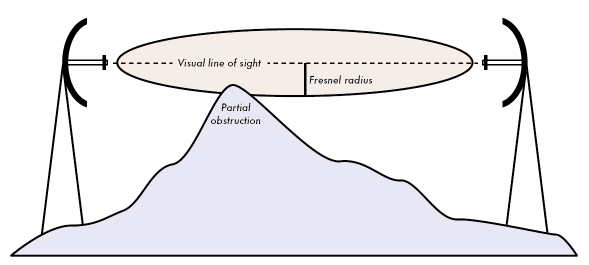

El radio de la Zona de Fresnel sera:
Se han ingresado datos incorrectos
La Zona de Fresnel se le llama al espacio elíptico libre que debe existir entre dos antenas emisoras para que pueda haber un correcto translado de ondas sin que exista obstrucción.
Es la ecuación utilizada para sacar el radio desde el centro de nuestra antena hasta el borde de la Zona de Fresnel.
Esta es su fórmula: